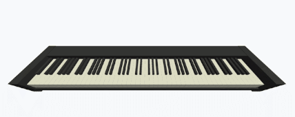

Coding Projects
Kernel Error
Kernel Error is a horror puzzle-solving game developed by a team of 7 for the Horror Genre as Social Force: Student
Project Scholarship in Spring 2025. It is made with Unity in C#.
The game features the Year 2000 (Y2K) problem where a program gained its consciousness right before the Y2K problem happened. Accidentally gaining access to files in the computer, the player as the program had the illusion that they are the owner of the computer. Through exploring the stories of the father (computer owner), the player gradually uncovers a tragic story about a struggling family with broken relationships.
Believing they are the owner of the computer, the player tried to fix the Y2K bug so they can get back home. However, as the game unfolds, the player realizes that they are just another program - there is nothing they can do to change the owner's life and his family, which essentially poses the philosophical question on how do we see existence and its hidden implications in modern society.
Being a horror game, Kernel Error features a blend of traditional jump scare and careful designs that triggers psychological horror. By the use of audiovisual effects and the surroundings the player experiences, the game creates an immersive and interactive playing experience.
Personally, I am the Unity coder/developer and the narrative designer of the game. I also help with the audio designing aspects. While working on the project, I gained experience in Git collaboration by establishing the development workflow; in addition, my skills of implementing designed narrative (requirements/specifications) using code are enhanced during the process.
This is an ongoing project. Once we have a potentially publishable product, I will put an updated link here.
Chords

Chords is a personal project. It is a web application that obtains MIDI input from the user and outputs real-time detected chord on the screen.
I have always wanted to do such a project because of my passion in music, and my overlapping experience in both (musical) keyboarding and coding/programming. Several other web libraries/applications have also focused on MIDI input based chord detection, one amongst which is tonal.js. However, after trying it out, I found that its detection results are not the most accurate; besides, the user cannot customize how they want the chords to be displayed, as there can be multiple ways of expressing the same chord.
Thus, I started working on Chords using React, WebMIDI API, and Three.js for the modeling of keyboard. Chords is capable of setting up MIDI I/O devices and detecting chord as you play notes and displaying them via the 3D model and the text output.
The more detailed instructions in installing and trying out the project, the algorithm behind chord detection, and the list of chord currently supported are in my GitHub repository linked below; go ahead and play around with it:
https://github.com/peterju00004/chords
finesite
finesite is my personal website. You can find my projects and works done right here.
The ideas behind its name is the psychological functions of consciousness proposed by the Swiss psychologist Carl Jung. According to his theories, there exists four main functions: two perceiving or non-rational functions, and two judging or rational functions; each of the functions modified by extroversion and introversion.
After some personality tests I have determined my four main functions of consciousness: Introverted Feeling (Fi), Extroverted Intuition (Ne), Introverted sensation (Si), and Extroverted Thinking (Te) - making it finesite.
This website is built with HTML, CSS, and JavaScript. It is deployed to a bought domain of mine, which allows me to learn this process and related concepts like DNS management. If you want to visit the code for my website, you can go ahead to:
https://github.com/peterju00004/finesite.org
Finance Tracker Application
Finance Tracker Application is a prototypical application that envisions how a finance tracker works. It addresses to the problem statement today about managing one's financial states, spending, and budgets.
Within a team of 4, we designed from early stage about the UML diagrams, subsystem decompositions, and typical use cases of this application. After having a comprehensive product backlog that adheres with the application's needed function and nonfunctional requirements, we started the development process with an agile/scrum workflow to implement two selected functionalities of the product as a prototype.
The application is developed using web languages like HTML, CSS, and JavaScript, additionally with Flask as its backend framework and SQLite as the database it uses. During the development process, I am in charge of the overall UI design and the notification system that responds to changes in user budget and expenses; this includes both developing database structure, backend routing and communication with RESTful APIs, and frontend display of the notification messages.
If you want to explore more on the Financial Tracker Application, please visit its GitHub repository. More information can be found in the repository Wiki pages:
https://github.com/stanleytengg/CS1530-Final-Project
Best Neighborhood in Pittsburgh

Best Neighborhood in Pittsburgh assess the best neighborhood in Pittsburgh on a customized 3D metric: pollution, illegal dump sites, and hypertension & hyperlipidemia situations in each of the neighborhoods.
Within a team of 2, we collected and analyzed data related to these environmental-and-health metric using Python, the library Pandas/Geopandas, and Matplotlib. The results showed that Upper Lawrenceville is the best neighborhood under our metric.
More on this project is in its GitHub repository:
https://github.com/peterju00004/Best-Neighborhood-in-Pittsburgh